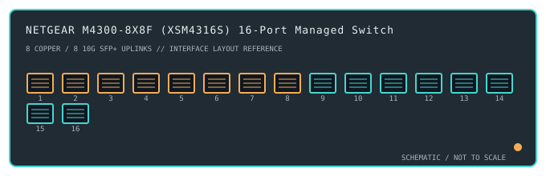

[ MODEL-SPECIFIC NETWORK HARDWARE ]
NETGEAR M4300-8X8F (XSM4316S) 16-Port Managed Switch
A rack-mount Layer 3 switch combining eight 10GBASE-T copper interfaces with eight 10GbE SFP+ ports.

IDENTIFICATION: Confirm the complete product label and hardware revision before applying power, firmware or transceiver assumptions. Link and fabric rates below are nominal vendor specifications, not test results.
Detailed specifications and compatibility
| Subcategory | Managed switches |
|---|---|
| Exact product and model | NETGEAR M4300-8X8F (XSM4316S) 16-Port Managed Switch |
| Ports / physical interface | 8 × 10GBASE-T RJ-45 ports and 8 × 10GbE SFP+ ports in one 1U chassis. The copper ports negotiate multi-gigabit rates according to endpoint/cable support; the SFP+ cages accept supported optical or DAC links. |
| Bus and host connection | Standalone 1U rack-mount switch with copper and SFP+ Ethernet interfaces. Hosts connect over the network; no PCIe host driver is required. |
| Nominal switching performance | 320Gb/s switching capacity for this 16-port 10GbE configuration, per manufacturer literature. Actual forwarding depends on packet mix, features, cabling and peer capability. |
| Power over Ethernet | No PoE output is specified for XSM4316S; do not expect it to power endpoints. |
| Management and software | M4300 managed Layer 3 software includes CLI/web management, VLANs, routing and stacking/virtual-chassis capabilities subject to firmware and model support. Use NETGEAR's exact XSM4316S firmware and release notes. |
| Power and physical form | 1U rack enclosure with AC power and active cooling. Allow airflow and check the chassis label; 10GBASE-T copper can have different reach and thermal constraints than fiber uplinks. |
| Compatibility | Use Cat 6 or better cabling for 10GBASE-T at the supported installation distance and supported SFP+ optics/DACs for the fiber ports. Verify module compatibility and link settings at both ends; configuration is performed using supported browser/CLI tools rather than an OS NIC driver. |
| Variant identification | XSM4316S is the M4300-8X8F mixed-interface model. It is not an all-SFP+ M4300 sibling or a 10GBASE-T-only model; retain exact SKU and firmware records. |
| Measured throughput | No physical sample was benchmarked for this record. Nominal line rate and switching-fabric ratings are not measured application throughput. |
Revision-specific use notes
XSM4316S is the M4300-8X8F mixed-interface model. It is not an all-SFP+ M4300 sibling or a 10GBASE-T-only model; retain exact SKU and firmware records.
Use Cat 6 or better cabling for 10GBASE-T at the supported installation distance and supported SFP+ optics/DACs for the fiber ports. Verify module compatibility and link settings at both ends; configuration is performed using supported browser/CLI tools rather than an OS NIC driver.
M4300 managed Layer 3 software includes CLI/web management, VLANs, routing and stacking/virtual-chassis capabilities subject to firmware and model support. Use NETGEAR's exact XSM4316S firmware and release notes.
Archival, ESD and preservation notes
Record the full SKU and hardware revision, serial/date code, firmware release, supply label, installed transceiver identifiers and physical port test results. Keep configuration backups free of credentials and private network details.
Disconnect mains and attached PoE loads before service. Keep optics capped and store transceivers separately with their wavelength, fiber mode and part number recorded.
Manufacturer sources
- NETGEAR XSM4316S product informationManufacturer product or model-specific technical documentation. Verify the exact SKU, hardware revision, region and firmware.
- NETGEAR XSM4316S support and firmwareManufacturer product or model-specific technical documentation. Verify the exact SKU, hardware revision, region and firmware.
Confirm the source's revision/region applicability against the item label. Manufacturer link rates and capacity ratings are not measurements of application-level throughput.